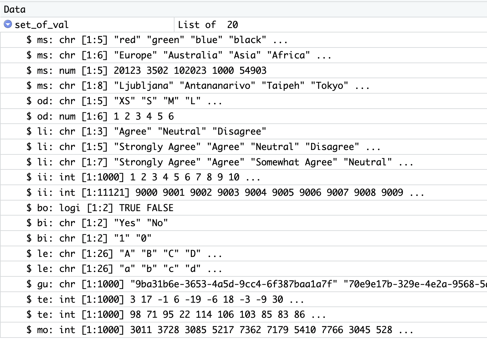

The datasetR helps you generate a random datasets for your R project. It provides a preset random list of values with different data types (interval, ordinal, nominal values). It includes also a function for imputing a NULL, NA or missing values.
Installing
datasetR package can be installed and downloaded from this Github repository using devtools package. More on devtools package.
Installing is done using:
library(devtools)
install_github("tomaztk/datasetR")Getting started
Comes prepacked with a main function dsR() that will help you generate the dataset. But first, let’s create a list with 20 different variable types and a random values.
library(datasetR)
set_of_val <- set_of_valAnd you will get a starting set of values: 
Data Types
Understand the predefined list of values for constructing the datasets.
Types explained:
- ms: multi-class type of nominal data; all values are equal and no ordering can be done. Available:
- color
- continents
- imaginary ZIP codes
- capital cities
- od: ordinal data; values can be assigned order and comparison can be created. Available:
- clothing size
- classes from 1 to 6
- li: likert scale data; questionnaire type of data and values can be sorted. Available:
- three-value scale for expressing opinion
- five-value scale for expressing opinion
- seven-value scale for expressing opinion
- bo: boolean data; with values of TRUE and FALSE
- bi: binary data with two outcomes. Available:
- character type of values Yes and No
- integer type of values 0 and 1
- le: single character values of alphabet letters. Available:
- lowercase letters
- uppercase letters
- gu: alpha-numeric character string of 16 bytes length, v4; known as Globally unique identifier (GUID or UUID)
- te: numeric data of temperature with no specific unit of measure. Available:
- temperature (pref. °C) with range from -20 to 35
- temperature (pref. °C) with range from 1 to 130 (integer type)
- mo: numeric data of money with no specific unit.
Generating your random dataset
With the following example, the code will create a dataframe of 100 rows with total of 8 variables. The 8 variables will be type: 1. 3 x multi-class (nominal with multiple classes; characters or numbers) 2. 4 x two-class (nominal with two (binary) class ; characters or numbers) 3. 1 x interval (integer)
The dimensions of the dataset is 8 variables and 100 rows of sampled data.
Generating your desired
When you want to create a desired dataset, use the vrparameter and construct the string for the values. The string is annotated as type : number of variables . When stating multiple types, make sure to separated them with semi-colon.
test_data <- dsR(vr="od:1;ms:1;bi:1;ii:1", nr=10);And following statements will generate the dataset of the same dimension.
Adding missing values to your dataset
When you want to skew your dataset, you can add some missing values to your desired data. By using addMissingValues on a desired dataset and desired column, the values will get replaced by NA values. In addition, the parameter pc is for percent of values for given dataframe.column that you want to replace.
my_dataset$ii_1 <- addMissingValues(my_dataset, ii_1, pc = 10)Community and distribution
You are welcome to submit suggestions and report bugs: https://github.com/tomaztk/datasetR/issues